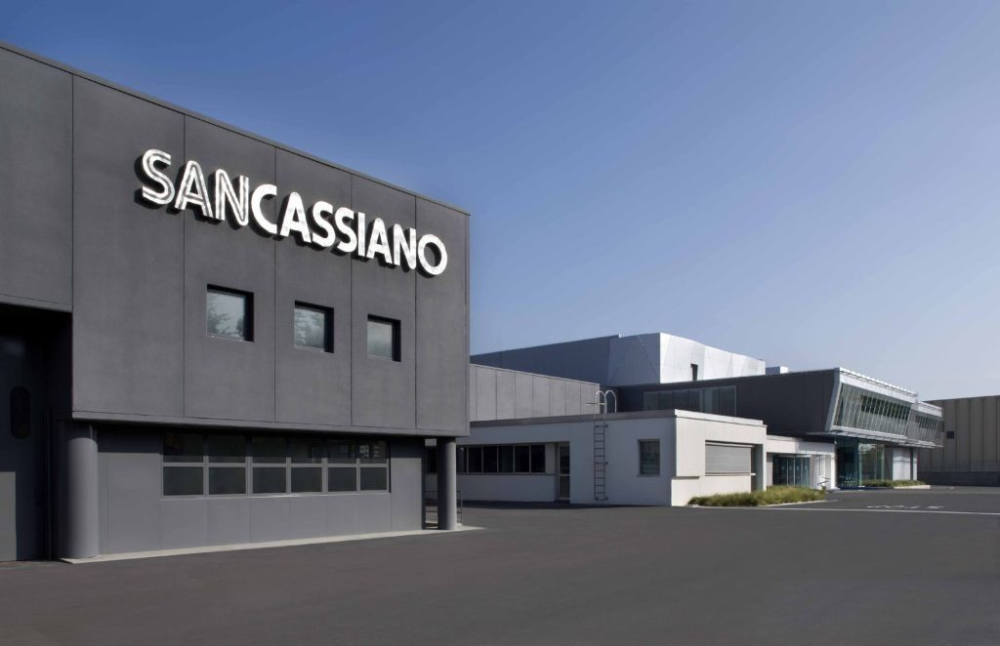
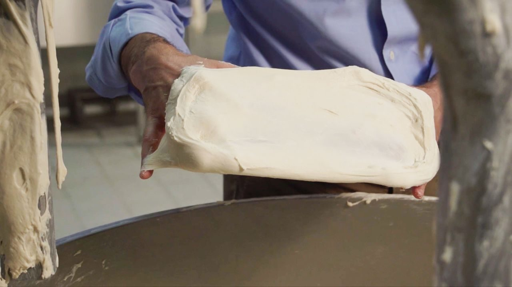
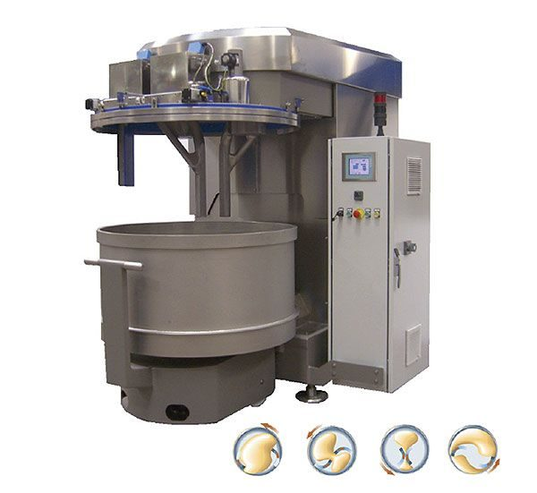
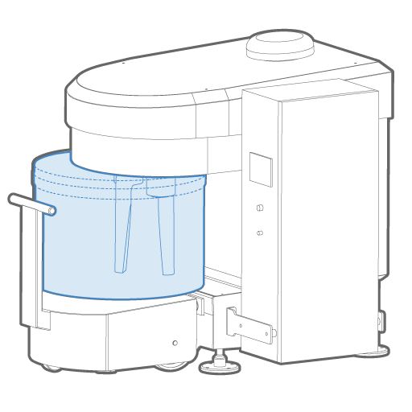
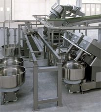

SANCASSIANO
Тестомесильные машины
Системы замеса и расстойки для разных рецептур. В серии Genesi привод работает без масла, а внутри дежи и смесительной камеры предусмотрено исполнение без открытого крепежа.
- Серия Genesi
- Безмасляный привод
Фотографии и схемы










Описание и комплектация
Санкассиано: Просто смешай
С 1962 года мы специализируемся на производстве миксеров, тестомесов, автоматических систем смешивания и расстойки, а также систем закваски.
Мы поставляем нашим клиентам по всему миру вертикальные или непрерывные тестомесы, планетарные миксеры, автоматические решения с нижней разгрузкой, тестомесильные карусели и тестомесильные роботы.
Как оптимизировать качество, эффективность и повторяемость перемешивающего действия?
Как сделать доступными все объективные данные для повышения качества и консистенции теста?
Как сделать миксер проще в использовании для любого оператора?
Как сделать смеситель модульным? (тот же тестомес / разные технологии смешивания)
Как повысить гигиену?
Как сделать смеситель проще и быстрее чистить?
Как сделать миксер «интеллектуальным» для того, чтобы он самостоятельно адаптировался при превышении проектного предела?
Как сделать миксер проще и быстрее обслуживать?
На все эти вопросы ответит только оборудование Sancassiano!
Гарантия того, что тесто не может быть загрязнено маслом или другими смазочными материалами, что болты или другие механические компоненты не могут попасть в продукт, является гарантией того, что лишь немногие производители могут гарантировать
Ценности, заложенные в сердце проекта Genesi
Безмасляные системы движения на всех наших миксерах
Полное устранение всех болтов и винтов внутри чаши и смесительной камеры
Горизонтальные поверхности были наклонены везде, где это возможно, чтобы помочь дренажу воды и избежать застоя жидкости
Мертвые углы, точки сервиса и крутые углы были устранены в соответствии с самыми строгими стандартами (USDA, FDA,…)
Увеличенная высота от пола для облегчения выгрузки и очистки.
Обширные испытания в программном обеспечении для моделирования и расчета прототипа стали основой наших технических разработок за последние 10 лет. Результатом является более интегрированный, эффективный и надежный дизайн
Абсолютная надежность - это наша цель в сочетании с чрезвычайно сокращенным и простым в обслуживании техническим обслуживанием, а также энергоэффективностью, ранее не достигнутой в тестомесильном оборудовании.
Genesi интегрирует:
Превосходная механическая надежность вместе с коробками передач OIL_FREE
Исключительная энергоэффективность с потребностями в коммунальных услугах снизилась до 60% по сравнению с традиционными смесителями
Чрезвычайно сокращенное обслуживание, интуитивно понятное и не требующее специального обученного персонала
Самоограничивающийся активный контроль доступен по запросу, чтобы не перегружать механические и электрические компоненты
Использование стандартных компонентов, доступных по всему миру